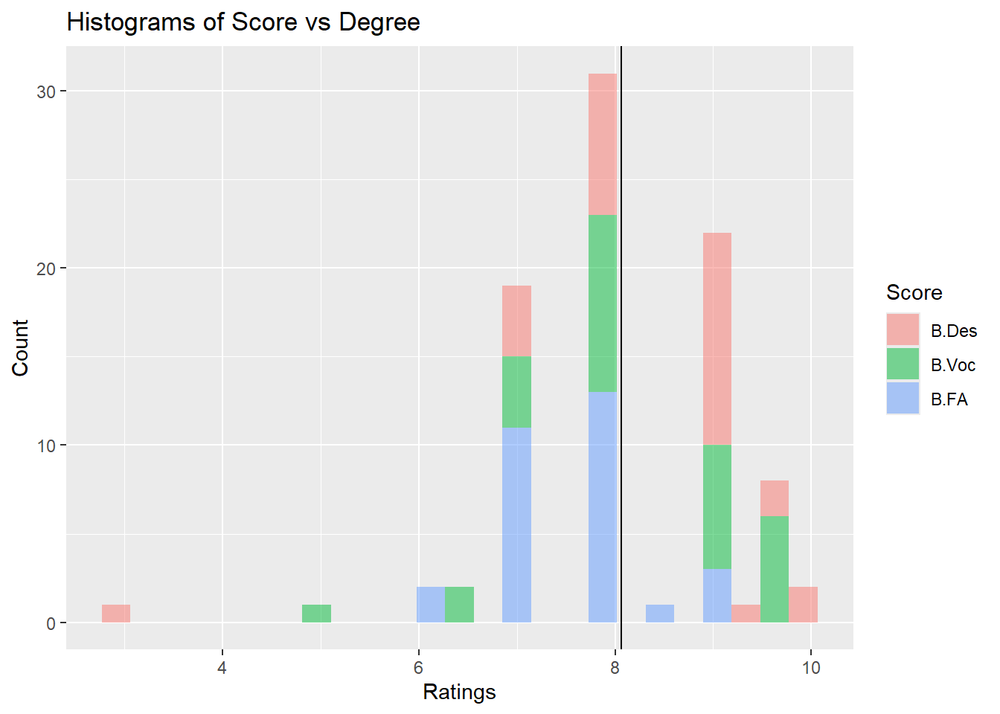
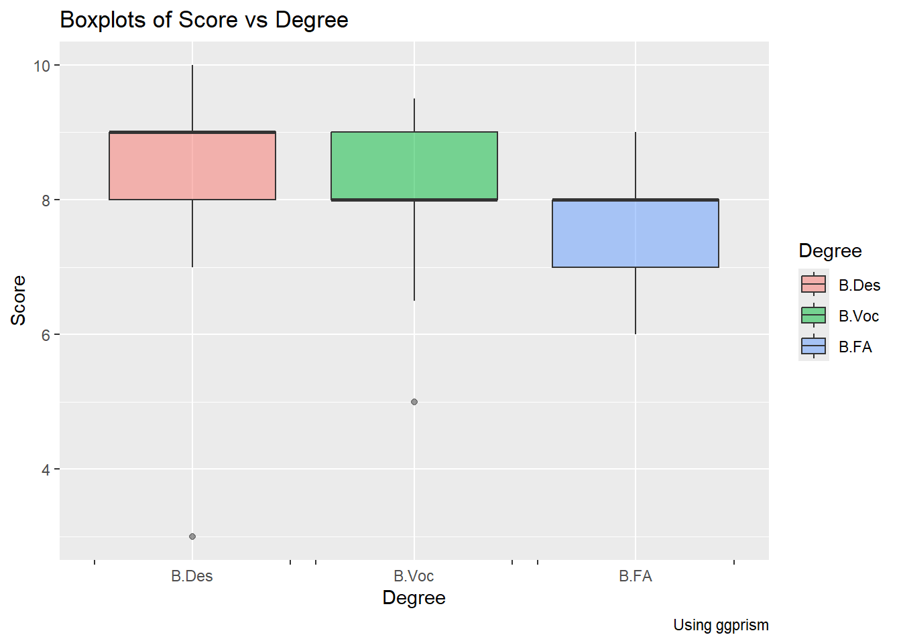

── Attaching core tidyverse packages ──────────────────────── tidyverse 2.0.0 ──
✔ dplyr 1.1.4 ✔ readr 2.1.5
✔ forcats 1.0.0 ✔ stringr 1.5.1
✔ ggplot2 3.5.1 ✔ tibble 3.2.1
✔ lubridate 1.9.3 ✔ tidyr 1.3.1
✔ purrr 1.0.2
── Conflicts ────────────────────────────────────────── tidyverse_conflicts() ──
✖ dplyr::filter() masks stats::filter()
✖ dplyr::lag() masks stats::lag()
ℹ Use the conflicted package (<http://conflicted.r-lib.org/>) to force all conflicts to become errors
library(ggformula)
Loading required package: scales
Attaching package: 'scales'
The following object is masked from 'package:purrr':
discard
The following object is masked from 'package:readr':
col_factor
Loading required package: ggridges
New to ggformula? Try the tutorials:
learnr::run_tutorial("introduction", package = "ggformula")
learnr::run_tutorial("refining", package = "ggformula")
library(skimr)library(ggprism)library(kableExtra)
Attaching package: 'kableExtra'
The following object is masked from 'package:dplyr':
group_rows
library(mosaic)
Registered S3 method overwritten by 'mosaic':
method from
fortify.SpatialPolygonsDataFrame ggplot2
The 'mosaic' package masks several functions from core packages in order to add
additional features. The original behavior of these functions should not be affected by this.
Attaching package: 'mosaic'
The following object is masked from 'package:Matrix':
mean
The following object is masked from 'package:skimr':
n_missing
The following object is masked from 'package:scales':
rescale
The following objects are masked from 'package:dplyr':
count, do, tally
The following object is masked from 'package:purrr':
cross
The following object is masked from 'package:ggplot2':
stat
The following objects are masked from 'package:stats':
binom.test, cor, cor.test, cov, fivenum, IQR, median, prop.test,
quantile, sd, t.test, var
The following objects are masked from 'package:base':
max, mean, min, prod, range, sample, sum
library(supernova)
Attaching package: 'supernova'
The following object is masked from 'package:scales':
number
library(DescTools)
Attaching package: 'DescTools'
The following object is masked from 'package:mosaic':
MAD
library(broom)library(infer)
Attaching package: 'infer'
The following objects are masked from 'package:mosaic':
prop_test, t_test
library(patchwork)
grades <-read.csv("../../data/Art, Design, and Vocation are all diff.csv")grades
SN Degree Course Year Letter.Grade Score Gender
1 1 B.Des CAC 2 A 8.0 F
2 2 B.Des CAC 2 O 9.6 F
3 3 B.Des IADP 2 A+ 9.2 F
4 4 B.Des CE 2 O 9.8 F
5 5 B.Des BSSD 2 P 3.0 M
6 6 B.Des CAC 2 O 9.5 F
7 7 B.Des PSD 2 A+ 9.0 F
8 8 B.Des PSD 2 A+ 9.0 F
9 9 B.Des PSD 2 A+ 9.0 F
10 10 B.Des BSSD 3 A+ 9.0 F
11 11 B.Des VCSB 2 A 8.0 F
12 12 B.Des VCSB 2 A 8.0 F
13 13 B.Des IAIDP 3 A 8.0 M
14 14 B.Des IAIDP 3 B+ 7.0 M
15 15 B.Des VCSB 2 B+ 7.0 F
16 16 B.Des HCD 3 A+ 9.0 M
17 17 B.Des CAC 3 A+ 9.1 F
18 18 B.Des VCSB 2 A 8.0 M
19 19 B.Des CE 2 A+ 9.0 F
20 20 B.Des CAC 2 A+ 9.0 M
21 21 B.Des IADP 2 A 8.0 F
22 22 B.Des IADP 3 B+ 7.0 M
23 23 B.Des VCSB 3 A+ 9.0 F
24 24 B.Des CE 2 O 10.0 F
25 25 B.Des CAC 3 A+ 9.0 F
26 26 B.Des CAC 3 A+ 9.0 F
27 27 B.Des PSD 3 B+ 7.0 F
28 28 B.Des PSD 3 A 8.0 F
29 29 B.Des CAC 2 A+ 9.0 F
30 30 B.Des HCD 2 A 8.0 F
31 31 B.Voc UIID 3 O 9.5 F
32 32 B.Voc UIID 3 A+ 9.0 F
33 33 B.Voc UIID 3 A+ 9.0 M
34 34 B.Voc UIID 3 B+ 7.0 M
35 35 B.Voc UIID 3 A 8.0 F
36 36 B.Voc UIID 3 A 8.0 F
37 37 B.Voc ID 3 B+ 7.0 M
38 38 B.Voc DMP 3 O 9.5 M
39 39 B.Voc DMP 3 B 6.5 M
40 40 B.Voc DMP 3 O 9.5 M
41 41 B.Voc DMP 3 O 9.5 M
42 42 B.Voc DMP 3 A+ 9.0 M
43 43 B.Voc DMP 3 O 9.5 F
44 44 B.Voc DMP 3 O 9.5 F
45 45 B.Voc DMP 3 B 6.5 F
46 46 B.Voc DMP 3 C 5.0 M
47 47 B.Voc UIID 1 A+ 9.0 M
48 48 B.Voc UIID 1 B 7.0 F
49 49 B.Voc UIID 1 B 7.0 F
50 50 B.Voc UIID 1 A 8.0 F
51 51 B.Voc UIID 1 A 8.0 F
52 52 B.Voc UIID 1 A+ 9.0 F
53 53 B.Voc UIID 2 A 8.0 M
54 54 B.Voc GADP 1 A 8.0 F
55 55 B.Voc GADP 2 A 8.0 M
56 56 B.Voc Film 3 A 8.0 M
57 57 B.Voc GADP 3 A+ 9.0 F
58 58 B.Voc GADP 3 A+ 9.0 F
59 59 B.Voc DMP 2 A 8.0 M
60 60 B.Voc DMP 2 A 8.0 M
61 61 B.FA CAP 3 A 8.0 F
62 62 B.FA CAP 3 A+ 9.0 M
63 63 B.FA CAP 3 A+ 9.0 F
64 64 B.FA DMA 2 A+ 8.5 M
65 65 B.FA DMA 2 A 8.0 M
66 66 B.FA DMA 2 A 8.0 F
67 67 B.FA CAP 2 A 8.0 F
68 68 B.FA CAP 2 A+ 8.0 F
69 69 B.FA Film 3 B 6.0 M
70 70 B.FA DMA 2 A 8.0 F
71 71 B.FA DMA 2 B+ 7.0 F
72 72 B.FA DMA 2 B+ 7.0 F
73 73 B.FA DMA 2 A 8.0 F
74 74 B.FA DMA 2 B+ 7.0 F
75 75 B.FA DMA 2 B 6.0 M
76 76 B.FA Film 3 A 8.0 M
77 77 B.FA Film 3 A 8.0 M
78 78 B.FA DMA 2 A 8.0 M
79 79 B.FA DMA 2 A 8.0 M
80 80 B.FA DMA 2 B+ 7.0 F
81 81 B.FA DMA 2 B+ 7.0 F
82 82 B.FA Film 2 A 8.0 F
83 83 B.FA Film 3 B+ 7.0 F
84 84 B.FA DMA 2 A+ 9.0 F
85 85 B.FA DMA 2 A 8.0 M
86 86 B.FA DMA 2 B+ 7.0 F
87 87 B.FA DMA 2 B+ 7.0 F
88 88 B.FA DMA 2 B+ 7.0 M
89 89 B.FA DMA 2 B+ 7.0 F
90 90 B.FA DMA 2 B+ 7.0 F
SN Degree Course Year Letter.Grade Score Gender
1 1 B.Des CAC 2 A 8.0 F
2 2 B.Des CAC 2 O 9.6 F
3 3 B.Des IADP 2 A+ 9.2 F
4 4 B.Des CE 2 O 9.8 F
5 5 B.Des BSSD 2 P 3.0 M
6 6 B.Des CAC 2 O 9.5 F
7 7 B.Des PSD 2 A+ 9.0 F
8 8 B.Des PSD 2 A+ 9.0 F
9 9 B.Des PSD 2 A+ 9.0 F
10 10 B.Des BSSD 3 A+ 9.0 F
11 11 B.Des VCSB 2 A 8.0 F
12 12 B.Des VCSB 2 A 8.0 F
13 13 B.Des IAIDP 3 A 8.0 M
14 14 B.Des IAIDP 3 B+ 7.0 M
15 15 B.Des VCSB 2 B+ 7.0 F
16 16 B.Des HCD 3 A+ 9.0 M
17 17 B.Des CAC 3 A+ 9.1 F
18 18 B.Des VCSB 2 A 8.0 M
19 19 B.Des CE 2 A+ 9.0 F
20 20 B.Des CAC 2 A+ 9.0 M
21 21 B.Des IADP 2 A 8.0 F
22 22 B.Des IADP 3 B+ 7.0 M
23 23 B.Des VCSB 3 A+ 9.0 F
24 24 B.Des CE 2 O 10.0 F
25 25 B.Des CAC 3 A+ 9.0 F
26 26 B.Des CAC 3 A+ 9.0 F
27 27 B.Des PSD 3 B+ 7.0 F
28 28 B.Des PSD 3 A 8.0 F
29 29 B.Des CAC 2 A+ 9.0 F
30 30 B.Des HCD 2 A 8.0 F
31 31 B.Voc UIID 3 O 9.5 F
32 32 B.Voc UIID 3 A+ 9.0 F
33 33 B.Voc UIID 3 A+ 9.0 M
34 34 B.Voc UIID 3 B+ 7.0 M
35 35 B.Voc UIID 3 A 8.0 F
36 36 B.Voc UIID 3 A 8.0 F
37 37 B.Voc ID 3 B+ 7.0 M
38 38 B.Voc DMP 3 O 9.5 M
39 39 B.Voc DMP 3 B 6.5 M
40 40 B.Voc DMP 3 O 9.5 M
41 41 B.Voc DMP 3 O 9.5 M
42 42 B.Voc DMP 3 A+ 9.0 M
43 43 B.Voc DMP 3 O 9.5 F
44 44 B.Voc DMP 3 O 9.5 F
45 45 B.Voc DMP 3 B 6.5 F
46 46 B.Voc DMP 3 C 5.0 M
47 47 B.Voc UIID 1 A+ 9.0 M
48 48 B.Voc UIID 1 B 7.0 F
49 49 B.Voc UIID 1 B 7.0 F
50 50 B.Voc UIID 1 A 8.0 F
51 51 B.Voc UIID 1 A 8.0 F
52 52 B.Voc UIID 1 A+ 9.0 F
53 53 B.Voc UIID 2 A 8.0 M
54 54 B.Voc GADP 1 A 8.0 F
55 55 B.Voc GADP 2 A 8.0 M
56 56 B.Voc Film 3 A 8.0 M
57 57 B.Voc GADP 3 A+ 9.0 F
58 58 B.Voc GADP 3 A+ 9.0 F
59 59 B.Voc DMP 2 A 8.0 M
60 60 B.Voc DMP 2 A 8.0 M
61 61 B.FA CAP 3 A 8.0 F
62 62 B.FA CAP 3 A+ 9.0 M
63 63 B.FA CAP 3 A+ 9.0 F
64 64 B.FA DMA 2 A+ 8.5 M
65 65 B.FA DMA 2 A 8.0 M
66 66 B.FA DMA 2 A 8.0 F
67 67 B.FA CAP 2 A 8.0 F
68 68 B.FA CAP 2 A+ 8.0 F
69 69 B.FA Film 3 B 6.0 M
70 70 B.FA DMA 2 A 8.0 F
71 71 B.FA DMA 2 B+ 7.0 F
72 72 B.FA DMA 2 B+ 7.0 F
73 73 B.FA DMA 2 A 8.0 F
74 74 B.FA DMA 2 B+ 7.0 F
75 75 B.FA DMA 2 B 6.0 M
76 76 B.FA Film 3 A 8.0 M
77 77 B.FA Film 3 A 8.0 M
78 78 B.FA DMA 2 A 8.0 M
79 79 B.FA DMA 2 A 8.0 M
80 80 B.FA DMA 2 B+ 7.0 F
81 81 B.FA DMA 2 B+ 7.0 F
82 82 B.FA Film 2 A 8.0 F
83 83 B.FA Film 3 B+ 7.0 F
84 84 B.FA DMA 2 A+ 9.0 F
85 85 B.FA DMA 2 A 8.0 M
86 86 B.FA DMA 2 B+ 7.0 F
87 87 B.FA DMA 2 B+ 7.0 F
88 88 B.FA DMA 2 B+ 7.0 M
89 89 B.FA DMA 2 B+ 7.0 F
90 90 B.FA DMA 2 B+ 7.0 F
gf_histogram(~Score,fill =~Degree,data = grades_modified, alpha =0.5) %>%gf_vline(xintercept =~mean(Score)) %>%gf_labs(title ="Histograms of Score vs Degree",x ="Ratings", y ="Count" ) %>%gf_refine(guides(fill =guide_legend(title ="Score")))

Inference
B.Des seems to have higher grades than B.Voc and BFA
The line shows the mean grades across all categories which is around 8
Variance in each category seems to be more or less the same except for a few outliers in B.Des and B.Voc category
gf_boxplot(data = grades_modified, Score ~ Degree,fill =~ Degree,alpha =0.5) %>%gf_vline(xintercept =~mean(Score)) %>%gf_labs(title ="Boxplots of Score vs Degree",x ="Degree", y ="Score",caption ="Using ggprism" ) %>%gf_refine(scale_x_discrete(guide ="prism_bracket"),guides(fill =guide_legend(title ="Degree")) )
Warning: The S3 guide system was deprecated in ggplot2 3.5.0.
ℹ It has been replaced by a ggproto system that can be extended.

Inference
The median of B.Des is higher than B.Voc and BFA, B.Voc and BFA have same median
There are outliers below the boxplot in both B.Des and B.Voc
The size of the box is almost the same for all three categories, suggesting that variance in each category is about the same
grades_anova <-aov(Score ~ Degree, data = grades_modified)
# Not too different...OK on with the testDescTools::LeveneTest(Score ~ Degree, data = grades_modified)
Levene's Test for Homogeneity of Variance (center = median)
Df F value Pr(>F)
group 2 0.7294 0.4851
87
##fligner.test(Score ~ Degree, data = grades_modified)
Fligner-Killeen test of homogeneity of variances
data: Score by Degree
Fligner-Killeen:med chi-squared = 2.2707, df = 2, p-value = 0.3213
Inference
p-value in Levene’s test and Fligner-Killeen Test are both greater than 0.05 which indicates that we can assume that the variances are equal across the the grades of the different degrees
The variance is most for B.Des followed by B.Voc and then BFA, but the variances do not have significant differences
The red line indicates the observed f-statistic while the graph represents the null distribution of f-statistic using simulation
Inference
since the shaded area at the right side of the red line is pretty small, this tells us that the observed f-statistic is not as likely under null hypothesis, indicating a significant result
thus there is some evidence of dependence between score and degree
Conclusion
B.Des has the highest grades but they are not significantly larger than B.Voc. B.Des and B.Voc have similar grades and they are both greater than BFA. This tells us that B.Des and B.Voc both perform better than BFA.